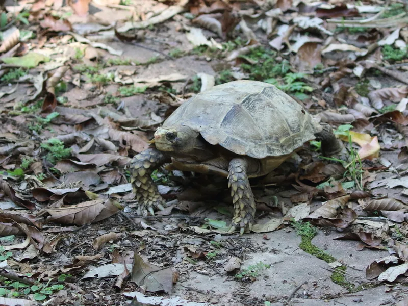

東南アジア山岳部に生息するムツアシガメ属の希少種。甲羅に独特の凹みがある美麗種だが、低温・高湿度・キノコ食という特殊な管理要件を持つ最難種の一つ。CITES II。

1年後の甲長は10〜14cm程度。扁平気味の甲羅が際立ち始める時期。ミャンマー〜インドネシアの標高800〜1500mの山岳林床に生きる種で、低温（20〜25℃程度）・高湿度・キノコ中心の食性が特徴的。環境が合うと活動的になる傾向がある。
10年後は甲長20〜28cm、重さ1〜3kg程度が多い。山岳に生きる種らしく比較的コンパクトにまとまる。30〜80年の寿命を持つが、低温多湿環境を維持するための継続的な設備投資が必要になる。
インプレッサムツアシガメは標高1000m前後の山岳林床に適応した種で、一般的なリクガメと比べて求める温度帯が大幅に低い。高温バスキングスポット（40℃以上）を設置すると過熱してしまう場合がある。「リクガメの常識をいったん脇に置き、この種固有の環境条件から設計し直す」という姿勢が、安定飼育への近道になりやすい。
ミャンマー・タイ・マレーシア・インドネシアの山岳地帯（標高800〜1500m）の林床に生息。低温多湿の環境に特化。野生では主にキノコ・苔・野草・落ち葉を食べる特殊な食性を持つ。
高湿度と低温管理のためクーラー・加湿器が必須。キノコ（椎茸・まいたけ）を主食に与えることが本種の健康維持に重要。国内では飼育事例が非常に少ない最上位難易度種。
← 横にスクロールできます
| 種名 | 甲長 | 難易度 | 必要ケージ | 特徴 |
|---|---|---|---|---|
| インプレッサムツアシガメ このページ | 25〜31cm | 上級 | 90〜120cm | 本種・山岳性・最難 |
| エロンガータリクガメ | 25〜33cm | 中〜上級 | 90〜120cm | 東南アジア・管理しやすい |
| アカアシリクガメ | 30〜35cm | 中〜上級 | 90〜120cm | 多湿・南米 |
| ヒラセガメ | 15〜20cm | 上級 | 90cm〜流水 | 日本・希少上級 |